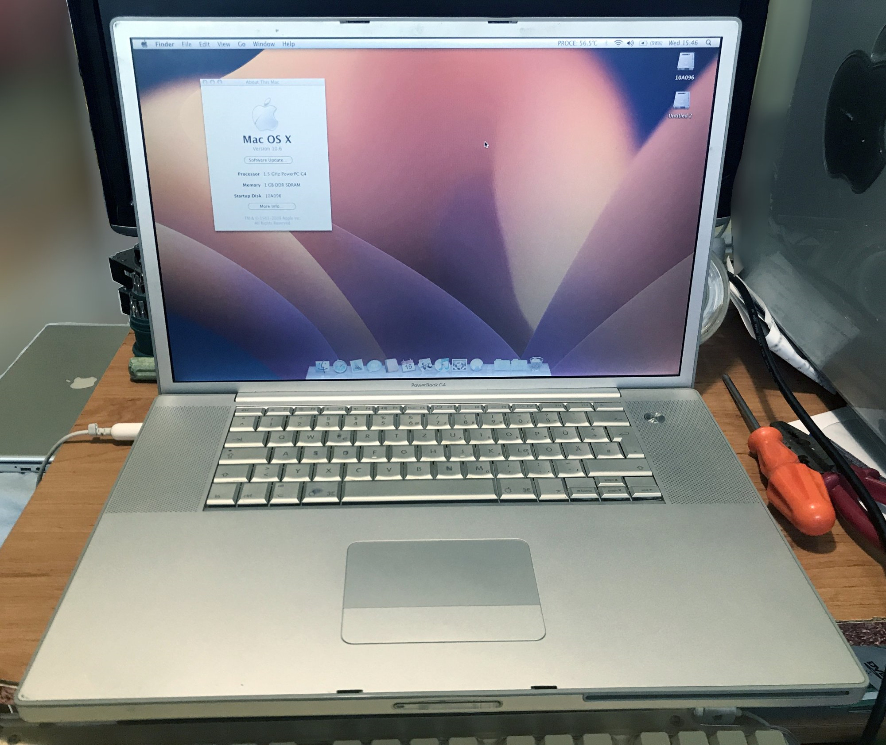
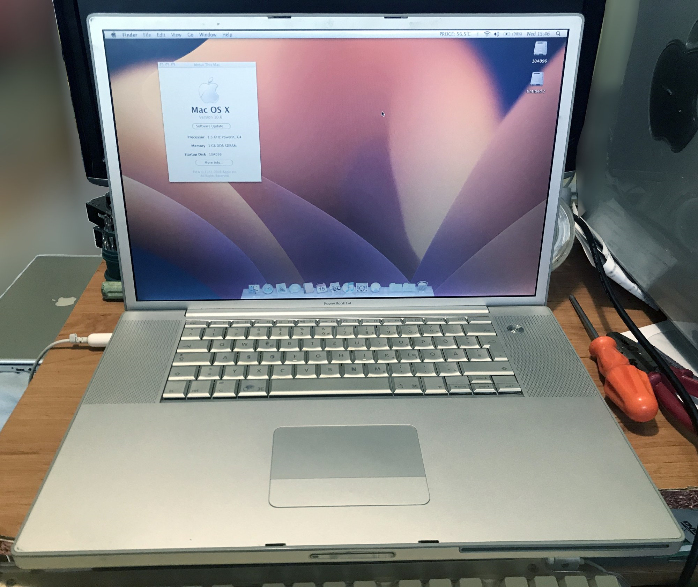

Recently I got a second A1085 17" PowerBook G4 that has a busted screen. Before buying it, I found that someone was selling the same screen it uses so I bought that too. When I got both things, I instantly got to work on it. Here's where the first problem comes up - one of the screws that hold the top case was stripped and I tried different things for several days to unscrew it with no luck. In the end I brought it to a repair shop and they did it in seconds, charging me nothing. I've been there before and I gotta say they are good at what they're doing. After that, I continued tearing it down which was really easy, following an ifixit guide. At first I didn't really know how to separate the two parts of the display assembly but after that I got the hang of it and could do it in under a minute. I cut myself several times on the aluminium (sharp!) but finally managed to separate it, disconnect the cables and remove the two small boards and the screws that hold everything together. After that I heated up the display so I could remove it from the frame (it was glued). You have to be really careful as to not bend the frame. I put the new display and started putting it back together and that's when I realized it differs from the original. I got the model from a website called PowerBookMedic but it turns out mine uses a slightly different one. The screen Apple used is LP171W01(A4)(K3), the one I got was a LP171WP4(TL)(01). Physically the only difference is that the backlight cable runs out of a slightly different place. I put the machine together and tested it and it worked! After that I realized that I didn't align the hinges correctly and that I forgot to remove the sticker that was on the back of the display, directly aligning with where the Apple logo is! I think I took it apart two more times but after that I was finally done! Here is a before and after:
 
